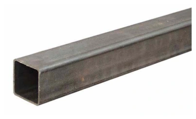
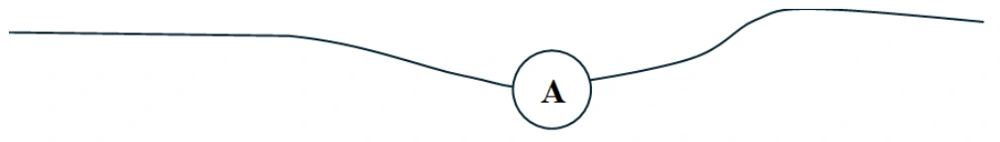
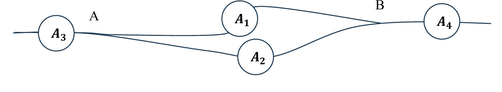

Bài tập — Bài 1 — Dòng điện và cường độ dòng điện
Hệ bài tập được biên soạn theo các dạng xuất hiện trong bộ tài liệu Vật lí 11 của dự án. Câu hỏi được giữ ngắn, trực tiếp; độ khó tăng dần và không cố tình thêm dữ kiện gây nhiễu.
Phần A — Trắc nghiệm 4 lựa chọn
Bài 1 — Mức 1 — Nhận biết
Điện lượng \(12\) C đi qua tiết diện dây trong \(4\) s. Cường độ dòng điện trung bình là
A. \(0,33\) A.
B. \(3\) A.
C. \(8\) A.
D. \(48\) A.
Đáp án và lời giải
Chọn B. \(I=\Delta q/\Delta t=12/4=3\) A.
Bài 2 — Mức 1 — Nhận biết
Dòng điện không đổi là dòng điện có
A. chiều không đổi nhưng cường độ luôn biến đổi.
B. cường độ và chiều không đổi theo thời gian.
C. điện lượng bằng 0.
D. chỉ tồn tại trong kim loại.
Đáp án và lời giải
Chọn B.
Bài 3 — Mức 1 — Nhận biết
Dòng điện trong kim loại có chiều quy ước
A. cùng chiều chuyển động có hướng của electron.
B. ngược chiều chuyển động có hướng của electron.
C. không liên quan điện trường.
D. từ cực âm sang cực dương ngoài nguồn.
Đáp án và lời giải
Chọn B. Chiều dòng điện quy ước là chiều chuyển động của điện tích dương.
Bài 4 — Mức 1 — Nhận biết
Dòng điện \(I=2\) A chạy trong \(30\) s. Điện lượng qua tiết diện là
A. \(15\) C.
B. \(28\) C.
C. \(60\) C.
D. \(120\) C.
Đáp án và lời giải
Chọn C. \(q=It=2\cdot30=60\) C.
Phần B — Đúng/Sai
Bài 5 — Mức 2 — Thông hiểu
Xét cường độ dòng điện:
a) \(1\) A = \(1\) C/s.
b) \(I=\Delta q/\Delta t\).
c) Trong kim loại, hạt tải điện chủ yếu là electron tự do.
d) Electron chuyển động nhiệt hỗn loạn hoàn toàn dừng lại khi có dòng điện.
Đáp án và lời giải
a) Đúng. b) Đúng cho giá trị trung bình; dòng không đổi thì dùng trực tiếp. c) Đúng. d) Sai: chuyển động nhiệt vẫn tồn tại, chồng thêm chuyển động trôi có hướng.
Bài 6 — Mức 2 — Thông hiểu
Một dây dẫn kim loại có mật độ electron tự do n, tiết diện S, tốc độ trôi trung bình v:
a) \(I=neSv\) về độ lớn.
b) Tăng S, các yếu tố khác giữ nguyên, I tăng.
c) Tốc độ trôi bằng tốc độ lan truyền tín hiệu điện trong dây.
d) Điện lượng qua tiết diện trong thời gian t là \(It\) với dòng không đổi.
Đáp án và lời giải
a) Đúng. b) Đúng. c) Sai: tốc độ trôi của electron rất nhỏ so với tốc độ truyền trường/tín hiệu. d) Đúng.
Phần C — Trả lời ngắn
Bài 7 — Mức 3 — Vận dụng
Dòng điện \(0,50\) A chạy trong \(2\) phút. Tính điện lượng và số electron qua tiết diện. Lấy \(e=1,6\cdot10^{-19}\) C.
Đáp án và lời giải
\(t=120\) s. \(q=It=0,5\cdot120=60\) C. Số electron \(N=q/e=60/(1,6\cdot10^{-19})=3,75\cdot10^{20}\).
Bài 8 — Mức 3 — Vận dụng
Trong \(0,20\) s có \(5\cdot10^{17}\) electron đi qua tiết diện dây. Tính cường độ dòng điện.
Đáp án và lời giải
\(q=Ne=5\cdot10^{17}\cdot1,6\cdot10^{-19}=0,08\) C. \(I=q/t=0,08/0,20=0,40\) A.
Bài 9 — Mức 3 — Vận dụng
Dây dẫn có tiết diện \(S=1\) mm², mật độ electron tự do \(n=8,5\cdot10^{28}\) m⁻³, dòng điện \(I=1,36\) A. Tính tốc độ trôi trung bình. Lấy \(e=1,6\cdot10^{-19}\) C.
Đáp án và lời giải
\(S=10^{-6}\) m². Từ \(I=neSv\): \(v=I/(neS)=1,36/(8,5\cdot10^{28}\cdot1,6\cdot10^{-19}\cdot10^{-6})=10^{-4}\) m/s \(=0,1\) mm/s.
Phần D — Vận dụng và vận dụng cao
Bài 10 — Mức 4 — Vận dụng cao
Một dây dẫn hình trụ có đường kính giảm dần nhưng cùng vật liệu và cùng dòng điện không đổi chạy qua. Ở tiết diện 1, bán kính \(r_1=2r_2\). Giả sử mật độ hạt tải n như nhau. So sánh tốc độ trôi \(v_1\) và \(v_2\).
Đáp án và lời giải
Dòng điện liên tục nên \(I=neSv\) như nhau tại hai tiết diện.
\(S\propto r^2\), nên \(S_1/S_2=(r_1/r_2)^2=4\).
Do \(S_1v_1=S_2v_2\), suy ra \(v_2=4v_1\). Hạt tải phải trôi nhanh hơn ở tiết diện nhỏ hơn để duy trì cùng dòng điện.
Ngân hàng bài tập mở rộng
Nhận biết — Trả lời ngắn
Bài 11
Cường độ của một dòng điện không đổi chạy qua dây tóc của một bóng đèn là \(I=1{,}0\,\mathrm A\). Điện lượng chuyển qua tiết diện thẳng của dây tóc trong thời gian \(\Delta t=1{,}5\) phút là bao nhiêu (tính theo đơn vị C)?
Đáp án và lời giải
Đáp án: \(90\)
Hướng dẫn giải: \(\Delta q=I\Delta t=1{,}0\cdot1{,}5\cdot60=90\,\mathrm C\).
Vậy kết quả cần tìm là \(90\).
Bài 12
Trong thời gian \(\Delta t=30\,\mathrm s\), có một điện lượng \(\Delta q=60\,\mathrm C\) chuyển qua tiết diện thẳng của dây dẫn. Số electron chuyển qua tiết diện thẳng của dây dẫn trong thời gian \(\Delta t'=20\,\mathrm s\) là \(X\times10^{20}\). Giá trị của \(X\) là
Đáp án và lời giải
Đáp án: \(2{,}5\)
Hướng dẫn giải: \(I=\Delta q/\Delta t=60/30=2{,}0\,\mathrm A\).
\(N=I\Delta t'/e=2{,}0\cdot20/(1{,}6\times10^{-19})=2{,}5\times10^{20}\).
Vậy \(X=2{,}5\).
Bài 13
Mật độ electron tự do trong một đoạn dây nhôm hình trụ là \(n=1{,}8\times10^{29}\,\mathrm{m^{-3}}\). Cường độ dòng điện chạy qua dây nhôm hình trụ có đường kính \(d=2{,}0\,\mathrm{mm}\) là \(I=2{,}0\,\mathrm A\). Lấy độ lớn điện tích của mỗi electron là \(e=1{,}6\times10^{-19}\,\mathrm C\). Tính tốc độ dịch chuyển có hướng của các electron tự do trong dây nhôm đó (theo đơn vị \(\mu\mathrm{m/s}\)).
Đáp án và lời giải
Đáp án: \(0{,}22\)
Hướng dẫn giải: Với \(S=\pi d^2/4\) và \(I=Snev\),
\(v=\dfrac{4I}{\pi d^2ne}\approx0{,}22\times10^{-6}\,\mathrm{m/s}=0{,}22\,\mu\mathrm{m/s}\).
Vậy kết quả cần tìm là \(0{,}22\).
Bài 14
Cho dòng điện không đổi cường độ \(I=4{,}2\,\mathrm A\) chạy qua một đoạn dây dẫn bằng kim loại dài \(l=80\,\mathrm{cm}\) có đường kính tiết diện thẳng \(d=2{,}5\,\mathrm{mm}\). Mật độ electron dẫn của kim loại này là \(n=8{,}5\times10^{28}\,\mathrm{m^{-3}}\). Lấy độ lớn điện tích của mỗi electron là \(e=1{,}6\times10^{-19}\,\mathrm C\). Hãy tính thời gian trung bình \(t\) để mỗi electron dẫn di chuyển hết chiều dài đoạn dây (theo đơn vị giờ và làm tròn đến chữ số thập phân thứ nhất sau dấu phẩy).
Đáp án và lời giải
Đáp án: \(3{,}3\)
Hướng dẫn giải: Diện tích tiết diện dây là \(S=\pi d^2/4\).
Từ \(I=Snev\) suy ra \(v=4I/(\pi d^2ne)\).
Do đó \(t=l/v=l\pi d^2ne/(4I)\approx1{,}2\times10^4\,\mathrm s\approx3{,}3\,\mathrm h\).
Vậy kết quả cần tìm là \(3{,}3\).
Bài 15
Trong một dây dẫn kim loại hình trụ tròn có dòng điện không đổi chạy qua. Mật độ electron dẫn của kim loại này là \(n=8{,}0\times10^{28}\,\mathrm{m^{-3}}\). Tốc độ chuyển động có hướng của các electron dẫn trong dây kim loại này là \(v=5{,}0\times10^{-5}\,\mathrm{m/s}\). Lấy độ lớn điện tích của mỗi electron là \(e=1{,}6\times10^{-19}\,\mathrm C\). Hãy tính mật độ dòng điện chạy trong dây dẫn này (theo đơn vị \(\mathrm{kA/m^2}\)), biết
\(j=I/S\).
Đáp án và lời giải
Đáp án: \(640\)
Hướng dẫn giải: Từ \(I=Snev\) suy ra \(j=I/S=nev\).
\(j=8{,}0\times10^{28}\cdot5{,}0\times10^{-5}\cdot1{,}6\times10^{-19}=640\times10^3\,\mathrm{A/m^2}=640\,\mathrm{kA/m^2}\).
Vậy kết quả cần tìm là \(640\).
Bài 16
Trong một thí nghiệm mạ bạc, cần có điện tích \(\Delta q=8{,}2\times10^3\,\mathrm C\) để lắng đọng một khối lượng bạc. Tính thời gian để khối bạc này lắng đọng khi cường độ dòng điện là \(I=0{,}20\,\mathrm A\) (theo đơn vị \(10^4\,\mathrm s\)).
Đáp án và lời giải
Đáp án: \(4{,}1\)
Hướng dẫn giải: \(\Delta t=\Delta q/I=(8{,}2\times10^3)/0{,}20=4{,}1\times10^4\,\mathrm s\).
Vậy kết quả cần tìm là \(4{,}1\).
Bài 17
Trong một dây dẫn có dòng điện không đổi chạy qua. Điện lượng chuyển qua tiết diện thẳng của dây dẫn trong thời gian \(300\,\mathrm s\) là \(675\,\mathrm C\). Cường độ của dòng điện này bằng bao nhiêu ampe (A)?
Đáp án và lời giải
Đáp án: \(2{,}25\)
Hướng dẫn giải: \(I=\Delta q/\Delta t=675/300=2{,}25\,\mathrm A\).
Vậy kết quả cần tìm là \(2{,}25\).
Bài 18
Trong một dây dẫn có dòng điện không đổi cường độ \(2{,}50\,\mathrm A\) chạy qua. Điện lượng chuyển qua tiết diện thẳng của dây dẫn trong thời gian \(200\,\mathrm s\) bằng bao nhiêu coulomb (C)?
Đáp án và lời giải
Đáp án: \(500\)
Hướng dẫn giải: \(\Delta q=I\Delta t=2{,}50\cdot200=500\,\mathrm C\).
Vậy kết quả cần tìm là \(500\).
Bài 19
Một dòng điện không đổi chạy qua một dây dẫn kim loại hình trụ tròn. Trong thời gian \(5{,}0\,\mathrm s\) có \(7{,}5\times10^{18}\) electron tự do dịch chuyển có hướng qua tiết diện thẳng của dây dẫn. Lấy độ lớn điện tích nguyên tố là \(1{,}6\times10^{-19}\,\mathrm C\). Cường độ của dòng điện này bằng bao nhiêu ampe (A)?
Đáp án và lời giải
Đáp án: \(0{,}24\)
Hướng dẫn giải: \(I=Ne/\Delta t=(7{,}5\times10^{18})(1{,}6\times10^{-19})/5{,}0=0{,}24\,\mathrm A\).
Vậy kết quả cần tìm là \(0{,}24\).
Bài 20
Mắc nối tiếp một bóng đèn với một ampe kế rồi nối hai đầu đoạn mạch này vào một nguồn điện không đổi thì thấy số chỉ của ampe kế là \(450\,\mathrm{mA}\). Điện lượng chuyển qua bóng đèn trong thời gian \(600\,\mathrm s\) bằng bao nhiêu coulomb (C)?
Đáp án và lời giải
Đáp án: \(270\)
Hướng dẫn giải: Vì ampe kế mắc nối tiếp với bóng đèn nên cường độ dòng điện qua bóng đèn là \(I=450\,\mathrm{mA}=0{,}450\,\mathrm A\).
\(\Delta q=I\Delta t=0{,}450\cdot600=270\,\mathrm C\).
Đối chiếu nguồn
Ô đáp án trong PDF ghi \(0{,}04\), nhưng chính phần hướng dẫn của PDF tính \(\Delta q=0{,}450\cdot600=270\,\mathrm C\). Tính độc lập cũng cho \(270\,\mathrm C\), nên đáp án được hiệu chỉnh theo dữ kiện và phép tính nguồn.
Bài 21
Dòng điện không đổi có cường độ \(3{,}30\,\mathrm A\) chạy trong một dây dẫn bằng đồng có đường kính tiết diện thẳng \(0{,}500\,\mathrm{mm}\). Giả sử mỗi nguyên tử đồng có một electron tự do. Khối lượng riêng và nguyên tử lượng của đồng lần lượt là \(9{,}00\times10^3\,\mathrm{kg/m^3}\) và \(64{,}0\,\mathrm{g/mol}\). Cho số Avogadro là \(N_A=6{,}02\times10^{23}\,\mathrm{mol^{-1}}\). Lấy độ lớn điện tích của mỗi electron là \(1{,}60\times10^{-19}\,\mathrm C\). Tính độ lớn vận tốc trôi của các electron tự do tạo nên dòng điện trong dây đồng này ra đơn vị mm/s (làm tròn đến 2 chữ số sau dấu phẩy thập phân).
Đáp án và lời giải
Đáp án: \(1{,}24\)
Hướng dẫn giải: Với khối lượng mol \(M=64{,}0\times10^{-3}\,\mathrm{kg/mol}\), mật độ electron tự do là \(n=N_A\rho/M\).
Tiết diện dây \(S=\pi d^2/4\). Từ \(I=Snev\) suy ra \(v=I/(Sne)\approx1{,}24\times10^{-3}\,\mathrm{m/s}=1{,}24\,\mathrm{mm/s}\).
Vậy kết quả cần tìm là \(1{,}24\).
Bài 22
Cho dòng điện không đổi cường độ \(4{,}25\,\mathrm A\) chạy qua một đoạn dây dẫn bằng kim loại dài \(2{,}00\,\mathrm{km}\) có đường kính tiết diện thẳng \(2{,}50\,\mathrm{mm}\). Mật độ electron dẫn của kim loại này là \(8{,}50\times10^{28}\,\mathrm{m^{-3}}\). Lấy độ lớn điện tích của mỗi electron là \(1{,}60\times10^{-19}\,\mathrm C\). Thời gian trung bình để một electron dẫn di chuyển từ đầu này đến đầu kia của đoạn dây này là bao nhiêu tuần (làm tròn đến 1 chữ số sau dấu phẩy thập phân)?
Đáp án và lời giải
Đáp án: \(52{,}1\)
Hướng dẫn giải: Từ \(I=Snev\), với \(S=\pi d^2/4\), suy ra \(t=l/v=l\pi d^2ne/(4I)\).
Thay số và đổi từ giây sang tuần: \(t\approx52{,}1\) tuần.
Vậy kết quả cần tìm là \(52{,}1\).
Nhận biết — Trắc nghiệm 4 lựa chọn
Bài 23
Đơn vị nào sau đây là một đơn vị đo của cường độ dòng điện?
A. Coulomb.
B. Coulomb·giây.
C. Coulomb/giây.
D. Coulomb\(^2\)/giây.
Đáp án và lời giải
Đáp án: C
Hướng dẫn giải: Vì \(I=\Delta q/\Delta t\), đơn vị của cường độ dòng điện có thể viết là C/s.
Vậy chọn C.
Bài 24
Hãy chọn thứ nguyên của cường độ dòng điện.
A. \(I\).
B. \(LT\).
C. \(L^2T^{-3}\).
D. \(IT^{-1}\).
Đáp án và lời giải
Đáp án: A
Hướng dẫn giải: Thứ nguyên cơ bản của cường độ dòng điện là \(I\).
Vậy chọn A.
Bài 25
Cường độ dòng điện có thể được đo bằng
A. thước kẻ.
B. ampe kế.
C. cân.
D. đồng hồ.
Đáp án và lời giải
Đáp án: B Hướng dẫn giải:
Dùng \(I=\Delta q/\Delta t\) và \(N=\Delta q/e\); với dòng điện trong kim loại có thể dùng \(I=neSv\).
Đối chiếu kết quả với các lựa chọn, phương án phù hợp là B. ampe kế.
Bài 26
Cường độ dòng điện là đại lượng vật lý đặc trưng cho
A. độ mạnh yếu của dòng điện.
B. công suất của dòng điện.
C. tốc độ tiêu thụ năng lượng của dòng điện
D. khả năng tỏa nhiệt của dòng điện.
Đáp án và lời giải
Đáp án: A Hướng dẫn giải:
Dùng \(I=\Delta q/\Delta t\) và \(N=\Delta q/e\); với dòng điện trong kim loại có thể dùng \(I=neSv\).
Đối chiếu kết quả với các lựa chọn, phương án phù hợp là A. độ mạnh yếu của dòng điện.
Bài 27
Cường độ dòng điện là đại lượng
A. vector.
B. vô hướng.
C. có thể đo bằng Watt kế.
D. có thể đo bằng lực kế.
Đáp án và lời giải
Đáp án: B Hướng dẫn giải:
Dùng \(I=\Delta q/\Delta t\) và \(N=\Delta q/e\); với dòng điện trong kim loại có thể dùng \(I=neSv\).
Đối chiếu kết quả với các lựa chọn, phương án phù hợp là B. vô hướng.
Bài 28
Một ampe là cường độ của một dòng điện tương ứng với …(1)… được chuyển qua tiết diện thẳng của một dây dẫn trong …(2)… Từ thích hợp điền vào hai chỗ trống là
A. điện tích nguyên tố - một giây.
B. \(1{,}6\times10^{-19}\) Coulomb – một giây.
C. \(10^{19}\) Coulomb – một phút.
D. một Coulomb – một giây.
Đáp án và lời giải
Đáp án: D
Hướng dẫn giải: \(1\,\mathrm A=1\,\mathrm C/\mathrm s\).
Vậy chọn D.
Bài 29
Một dòng chuyển dời có hướng của các hạt nào sau đây không được xem là một dòng điện?
A. Các hạt electron.
B. Các hạt ion \(\mathrm H^+\).
C. Các hạt ion \(\mathrm{Cl}^-\).
D. Các phân tử Nitrogen.
Đáp án và lời giải
Đáp án: D
Hướng dẫn giải: Phân tử Nitrogen trung hòa điện nên dòng chuyển dời có hướng của chúng không tạo thành dòng điện.
Vậy chọn D.
Bài 30
Phát biểu nào sau đây về cường độ dòng điện là không đúng?
A. Đơn vị cường độ dòng điện là Ampe.
B. Cường độ dòng điện được đo bằng Ampe kế.
C. Cường độ dòng điện càng lớn thì trong một đơn vị thời gian điện lượng chuyển qua tiết diện thẳng của vật dẫn càng nhiều.
D. Dòng điện không đổi là dòng điện chỉ có chiều không thay đổi theo thời gian.
Đáp án và lời giải
Đáp án: D Hướng dẫn giải:
Dùng \(I=\Delta q/\Delta t\) và \(N=\Delta q/e\); với dòng điện trong kim loại có thể dùng \(I=neSv\).
Đối chiếu kết quả với các lựa chọn, phương án phù hợp là D. Dòng điện không đổi là dòng điện chỉ có chiều không thay đổi theo thời gian.
Bài 31
Cho các hạt ion dương và các hạt ion âm có cùng số lượng, độ lớn điện tích và tốc độ trôi, chuyển động thành hai dòng có hướng. Đâu là một dòng điện có cường độ khác không?
A. Hai dòng ion khác dấu, ngược chiều.
B. Hai dòng ion khác dấu, cùng chiều.
C. Hai dòng ion dương, ngược chiều.
D. Hai dòng ion âm, ngược chiều.
Đáp án và lời giải
Đáp án: A Hướng dẫn giải:
Dùng \(I=\Delta q/\Delta t\) và \(N=\Delta q/e\); với dòng điện trong kim loại có thể dùng \(I=neSv\).
Đối chiếu kết quả với các lựa chọn, phương án phù hợp là A. Hai dòng ion khác dấu, ngược chiều.
Bài 32
Dòng điện không đổi là dòng điện có
A. cường độ không đổi theo thời gian.
B. chiều không thay đổi theo thời gian.
C. chiều và cường độ thay đổi theo thời gian.
D. chiều và cường độ không thay đổi theo thời gian.
Đáp án và lời giải
Đáp án: D
Hướng dẫn giải: Dòng điện không đổi có cả chiều và cường độ không thay đổi theo thời gian.
Vậy chọn D.
Bài 33
Cường độ dòng điện không đổi qua một vật dẫn phụ thuộc vào những yếu tố nào? I. Mật độ hạt tải điện trong vật dẫn II. Bản chất của vật dẫn III. Thời gian dòng điện qua vật dẫn.
A. I và II.
B. I.
C. I, II, III.
D. II và III.
Đáp án và lời giải
Đáp án: A Hướng dẫn giải:
Dùng \(I=\Delta q/\Delta t\) và \(N=\Delta q/e\); với dòng điện trong kim loại có thể dùng \(I=neSv\).
Đối chiếu kết quả với các lựa chọn, phương án phù hợp là A. I và II.
Bài 34
Điều kiện để có dòng điện là
A. phải có một vật dẫn điện.
B. phải có các hạt mang điện.
C. phải có các hạt mang điện chuyển động hỗn loạn.
D. phải có các hạt mang điện chuyển động có hướng.
Đáp án và lời giải
Đáp án: D Hướng dẫn giải:
Dùng \(I=\Delta q/\Delta t\) và \(N=\Delta q/e\); với dòng điện trong kim loại có thể dùng \(I=neSv\).
Đối chiếu kết quả với các lựa chọn, phương án phù hợp là D. phải có các hạt mang điện chuyển động có hướng.
Bài 35
Dòng điện là
A. dòng chuyển động của các điện tích.
B. dòng chuyển dời có hướng của các điện tích.
C. dòng chuyển dời của eletron.
D. dòng chuyển dời của ion dương.
Đáp án và lời giải
Đáp án: B Hướng dẫn giải:
Dùng \(I=\Delta q/\Delta t\) và \(N=\Delta q/e\); với dòng điện trong kim loại có thể dùng \(I=neSv\).
Đối chiếu kết quả với các lựa chọn, phương án phù hợp là B. dòng chuyển dời có hướng của các điện tích.
Bài 36
Dòng điện trong kim loại là dòng chuyển dời có hướng của
A. các ion dương.
B. các electron.
C. các ion âm.
D. các nguyên tử.
Đáp án và lời giải
Đáp án: B Hướng dẫn giải:
Dùng \(I=\Delta q/\Delta t\) và \(N=\Delta q/e\); với dòng điện trong kim loại có thể dùng \(I=neSv\).
Đối chiếu kết quả với các lựa chọn, phương án phù hợp là B. các electron.
Bài 37
Một dây dẫn bằng kim loại có tiết diện tròn, đường kính tiết diện \(3\,\mathrm{mm}\), có dòng điện \(4\,\mathrm A\) chạy qua. Cho biết mật độ electron tự do trong dây dẫn là \(8{,}45\times10^{28}\,\mathrm{m^{-3}}\). Vận tốc trôi của các electron gần bằng
A. \(0{,}01\,\mathrm{mm/s}\).
B. \(0{,}04\,\mathrm{mm/s}\).
C. \(0{,}07\,\mathrm{mm/s}\).
D. \(1{,}2\,\mathrm{mm/s}\).
Đáp án và lời giải
Đáp án: B
Hướng dẫn giải: \(v=I/(Sne)\) với \(S=\pi d^2/4\), suy ra \(v\approx0{,}042\,\mathrm{mm/s}\).
Vậy chọn B.
Bài 38
Dòng điện không đổi có cường độ \(1{,}3\,\mathrm A\) chạy trong một ống đồng có đường kính trong là \(1{,}8\,\mathrm{mm}\), đường kính ngoài là \(2\,\mathrm{mm}\). Khối lượng riêng và khối lượng mol của đồng lần lượt là \(9\,\mathrm{tấn/m^3}\) và \(64\,\mathrm{g/mol}\). Mỗi nguyên tử đồng cung cấp một electron tự do. Độ lớn vận tốc trôi của các electron tự do tạo nên dòng điện khoảng
A. \(0{,}18\,\mu\mathrm{m/s}\).
B. \(0{,}28\,\mu\mathrm{m/s}\).
C. \(0{,}38\,\mu\mathrm{m/s}\).
D. \(0{,}48\,\mu\mathrm{m/s}\).
Đáp án và lời giải
Kết luận: Không có phương án nào đúng. Theo dữ kiện đề, \(v\approx161\,\mu\mathrm{m/s}\).
Hướng dẫn giải:
Mật độ electron tự do:
\(n=\dfrac{\rho}{M}N_A=\dfrac{9000}{0{,}064}\cdot6{,}02\cdot10^{23}\approx8{,}47\cdot10^{28}\,\mathrm{m^{-3}}\).
Tiết diện dẫn điện của ống đồng là vành khăn:
\(S=\dfrac{\pi}{4}(D^2-d^2)=\dfrac{\pi}{4}[(2\cdot10^{-3})^2-(1{,}8\cdot10^{-3})^2]\approx5{,}97\cdot10^{-7}\,\mathrm{m^2}\).
Dùng \(I=nevS\):
\(v=\dfrac{I}{neS}\approx1{,}61\cdot10^{-4}\) m/s \(\approx161\,\mu\mathrm{m/s}\).
Đối chiếu nguồn
PDF tô C (\(0{,}38\,\mu\mathrm{m/s}\)) và lời giải dùng tiết diện của một thanh đặc thay vì tiết diện vành khăn của ống; kết quả đó còn không khớp phép thay số. Với đúng hai đường kính đã in, kết quả là khoảng \(161\,\mu\mathrm{m/s}\), ngoài bốn phương án. Nhãn lựa chọn cuối của PDF bị lặp thành A; repository giữ chuẩn cấu trúc là D.
Bài 39
Giả sử có một vật được nối với hai dây dẫn mang hai dòng điện có cùng cường độ là \(2\,\mathrm A\). Một dòng điện đi vào vật, một dòng điện đi ra khỏi vật. Số electron của vật thay đổi như thế nào theo thời gian?
A. Tăng \(1{,}25\times10^{19}\) hạt mỗi giây.
B. Giảm \(1{,}25\times10^{19}\) hạt mỗi giây.
C. Không đổi.
D. Tăng \(2{,}5\times10^{19}\) hạt mỗi giây.
Đáp án và lời giải
Đáp án: C
Hướng dẫn giải: Dòng điện đi vào vật bằng dòng điện đi ra khỏi vật nên vật không có sự tích trữ điện tích. Số electron của vật không đổi theo thời gian.
Bài 40
Chiều dòng điện được quy ước là chiều dịch chuyển có hướng của
A. electron.
B. neutron.
C. điện tích âm.
D. điện tích dương.
Đáp án và lời giải
Đáp án: D Hướng dẫn giải:
Dùng \(I=\Delta q/\Delta t\) và \(N=\Delta q/e\); với dòng điện trong kim loại có thể dùng \(I=neSv\).
Đối chiếu kết quả với các lựa chọn, phương án phù hợp là D. điện tích dương.
Bài 41
Đơn vị đo cường độ dòng điện là
A. ampe (A).
B. volta (V).
C. ohm (Ω).
D. watt (W).
Đáp án và lời giải
Đáp án: A Hướng dẫn giải:
Dùng \(I=\Delta q/\Delta t\) và \(N=\Delta q/e\); với dòng điện trong kim loại có thể dùng \(I=neSv\).
Đối chiếu kết quả với các lựa chọn, phương án phù hợp là A. ampe (A).
Bài 42
Quả cầu kim loại P tích điện dương, quả cầu kim loại N tích điện âm. Nối hai quả cầu bằng một dây đồng thì sẽ có
A. dòng electron chuyển từ N qua P.
B. dòng electron chuyển từ P qua N.
C. dòng proton chuyển từ N qua P.
D. dòng proton chuyển từ P qua N.
Đáp án và lời giải
Đáp án: A Hướng dẫn giải:
Dùng \(I=\Delta q/\Delta t\) và \(N=\Delta q/e\); với dòng điện trong kim loại có thể dùng \(I=neSv\).
Đối chiếu kết quả với các lựa chọn, phương án phù hợp là A. dòng electron chuyển từ N qua P.
Bài 43
Một proton và một electron đang bay theo phương ngang, cùng vận tốc dọc theo hướng từ Tây sang Đông tương ứng với hai dòng điện
A. cùng chiều từ Tây sang Đông.
B. ngược chiều và khác cường độ.
C. cùng chiều từ Đông sang Tây.
D. ngược chiều và cùng cường độ.
Đáp án và lời giải
Đáp án: D Hướng dẫn giải:
Dùng \(I=\Delta q/\Delta t\) và \(N=\Delta q/e\); với dòng điện trong kim loại có thể dùng \(I=neSv\).
Đối chiếu kết quả với các lựa chọn, phương án phù hợp là D. ngược chiều và cùng cường độ.
Bài 44
Dòng điện trong kim loại là dòng dịch chuyển
A. của các điện tích.
B. có hướng của các điện tích tự do.
C. có hướng của các hạt mang điện.
D. có hướng của các ion dương và âm.
Đáp án và lời giải
Đáp án: B Hướng dẫn giải:
Dùng \(I=\Delta q/\Delta t\) và \(N=\Delta q/e\); với dòng điện trong kim loại có thể dùng \(I=neSv\).
Đối chiếu kết quả với các lựa chọn, phương án phù hợp là B. có hướng của các điện tích tự do.
Bài 45
Chiều dòng điện trong một dây dẫn phụ thuộc vào
A. dấu của hạt tải điện trong dây dẫn ấy.
B. chiều của điện trường ngoài.
C. dấu của hạt tải điện trong dây dẫn và chiều của điện trường ngoài.
D. cường độ của điện trường ngoài
Đáp án và lời giải
Đáp án: B Hướng dẫn giải:
Dùng \(I=\Delta q/\Delta t\) và \(N=\Delta q/e\); với dòng điện trong kim loại có thể dùng \(I=neSv\).
Đối chiếu kết quả với các lựa chọn, phương án phù hợp là B. chiều của điện trường ngoài.
Bài 46
Hạt tải điện trong kim loại là
A. electron tự do.
B. ion dương.
C. ion âm.
D. proton.
Đáp án và lời giải
Đáp án: A Hướng dẫn giải:
Dùng \(I=\Delta q/\Delta t\) và \(N=\Delta q/e\); với dòng điện trong kim loại có thể dùng \(I=neSv\).
Đối chiếu kết quả với các lựa chọn, phương án phù hợp là A. electron tự do.
Bài 47
Dòng điện không đổi là dòng điện có
A. chiều không thay đổi theo thời gian.
B. cường độ thay đổi theo thời gian.
C. điện lượng chuyển qua tiết diện thẳng của dây dẫn thay đổi theo thời gian.
D. chiều và cường độ không thay đổi theo thời gian.
Đáp án và lời giải
Đáp án: D Hướng dẫn giải:
Dùng \(I=\Delta q/\Delta t\) và \(N=\Delta q/e\); với dòng điện trong kim loại có thể dùng \(I=neSv\).
Đối chiếu kết quả với các lựa chọn, phương án phù hợp là D. chiều và cường độ không thay đổi theo thời gian.
Bài 48
Trong một dây dẫn có dòng điện không đổi chạy qua. Điện lượng chuyển qua tiết diện thẳng của dây trong thời gian \(\Delta t\) là \(\Delta q\) thì cường độ của dòng điện này là
A. \(I=\Delta q\,\Delta t\).
B. \(I=\dfrac{\Delta q}{\Delta t}\).
C. \(I=\dfrac{\Delta t}{\Delta q}\).
D. \(I=2\dfrac{\Delta q}{\Delta t}\).
Đáp án và lời giải
Đáp án: B
Hướng dẫn giải: Theo định nghĩa cường độ dòng điện không đổi, \(I=\Delta q/\Delta t\).
Vậy chọn B.
Bài 49
Điều kiện để có dòng điện là
A. chỉ cần có hiệu điện thế.
B. chỉ cần duy trì một hiệu điện thế giữa hai đầu vật dẫn.
C. chỉ cần có nguồn điện.
D. chỉ cần có các vật dẫn nối liền với nhau thành mạch điện kín.
Đáp án và lời giải
Đáp án: B Hướng dẫn giải:
Dùng \(I=\Delta q/\Delta t\) và \(N=\Delta q/e\); với dòng điện trong kim loại có thể dùng \(I=neSv\).
Đối chiếu kết quả với các lựa chọn, phương án phù hợp là B. chỉ cần duy trì một hiệu điện thế giữa hai đầu vật dẫn.
Bài 50
Tác dụng đặc trưng nhất của dòng điện là
A. tác dụng từ.
B. tác dụng nhiệt.
C. tác dụng hóa học.
D. tác dụng cơ học.
Đáp án và lời giải
Đáp án: A Hướng dẫn giải:
Dùng \(I=\Delta q/\Delta t\) và \(N=\Delta q/e\); với dòng điện trong kim loại có thể dùng \(I=neSv\).
Đối chiếu kết quả với các lựa chọn, phương án phù hợp là A. tác dụng từ.
Bài 51
Trong nước muối, các hạt tải điện chủ yếu là
A. các electron tự do.
B. các ion Na+.
C. các ion Cl-
D. các ion Na+ và ion Cl-.
Đáp án và lời giải
Đáp án: D Hướng dẫn giải:
Dùng \(I=\Delta q/\Delta t\) và \(N=\Delta q/e\); với dòng điện trong kim loại có thể dùng \(I=neSv\).
Đối chiếu kết quả với các lựa chọn, phương án phù hợp là D. các ion Na+ và ion Cl-.
Bài 52
Một dây dẫn điện bằng đồng có tiết diện nhỏ dần dọc theo dây từ đầu này sang đầu kia của dây. Trong dây có dòng điện điện không đổi chạy qua. Tốc độ dịch chuyển có hướng của electron thay đổi như thế nào dọc theo dây?
A. Giảm dần khi tiết diện dây nhỏ dần.
B. Tăng dần khi tiết diện dây nhỏ dần.
C. Không thay đổi.
D. Giảm dần rồi tăng dần khi tiết diện dây tăng dần.
Đáp án và lời giải
Đáp án: B Hướng dẫn giải:
Dùng \(I=\Delta q/\Delta t\) và \(N=\Delta q/e\); với dòng điện trong kim loại có thể dùng \(I=neSv\).
Đối chiếu kết quả với các lựa chọn, phương án phù hợp là B. Tăng dần khi tiết diện dây nhỏ dần.
Bài 53
Gọi \(S\) là diện tích tiết diện thẳng của một dây dẫn kim loại hình trụ tròn, \(n\) là mật độ electron tự do (số electron tự do trong một đơn vị thể tích), \(v\) là tốc độ trung bình trong chuyển động có hướng của các electron tự do và \(e\) là độ lớn điện tích của mỗi electron thì cường độ \(I\) của dòng điện chạy trong dây dẫn là
A. \(I=ne/(Sv)\).
B. \(I=nv/(Se)\).
C. \(I=nve/S\).
D. \(I=Snve\).
Đáp án và lời giải
Đáp án: D
Hướng dẫn giải: Với dòng điện trong kim loại, \(I=Snve\).
Vậy chọn D.
Bài 54
Một dòng điện đi qua hai đoạn dây dẫn đồng chất, ở đoạn dây mảnh hơn thì tốc độ dịch chuyển có hướng của các hạt mang điện sẽ
A. nhỏ hơn.
B. lớn hơn.
C. vẫn bằng dây dẫn kia.
D. có thể nhỏ hơn hoặc lớn hơn.
Đáp án và lời giải
Đáp án: B Hướng dẫn giải:
Dùng \(I=\Delta q/\Delta t\) và \(N=\Delta q/e\); với dòng điện trong kim loại có thể dùng \(I=neSv\).
Đối chiếu kết quả với các lựa chọn, phương án phù hợp là B. lớn hơn.
Bài 55
Điện lượng chuyển qua tiết diện thẳng của một dây dẫn kim loại trong thời gian \(5{,}0\,\mathrm s\) là \(1{,}2\,\mathrm C\). Số electron đi qua tiết diện thẳng của dây dẫn này trong thời gian nói trên là
A. \(9{,}6\times10^{19}\).
B. \(3{,}4\times10^{19}\).
C. \(1{,}5\times10^{18}\).
D. \(7{,}5\times10^{18}\).
Đáp án và lời giải
Đáp án: D
Hướng dẫn giải: \(N=\Delta q/e=1{,}2/(1{,}6\times10^{-19})=7{,}5\times10^{18}\).
Vậy chọn D.
Bài 56
Số electron đi qua tiết diện thẳng của một dây dẫn kim loại trong \(1{,}0\,\mathrm s\) khi có điện lượng \(1{,}6\,\mathrm C\) dịch chuyển qua tiết diện thẳng của dây dẫn đó trong \(4{,}0\,\mathrm s\) là
A. \(1{,}0\times10^{19}\).
B. \(2{,}5\times10^{18}\).
C. \(1{,}8\times10^{18}\).
D. \(4{,}4\times10^{17}\).
Đáp án và lời giải
Đáp án: B
Hướng dẫn giải: Trong \(1\,\mathrm s\), điện lượng qua tiết diện là \(\Delta q=1{,}6/4=0{,}4\,\mathrm C\).
\(N=\Delta q/e=0{,}4/(1{,}6\times10^{-19})=2{,}5\times10^{18}\).
Vậy chọn B.
Nhận biết — Đúng/Sai
Bài 57
Hãy nhận định đúng, sai khi nói về dòng điện.
a) Dòng điện có thể tồn tại trong kim loại.
b) Dòng điện không thể tồn tại trong chân không vì trong chân không không có hạt tải điện.
c) Muốn có dòng điện, bắt buộc phải có các electron chuyển động thành một dòng có hướng.
d) Nước tinh khiết là một chất có mật độ hạt tải điện rất cao.
Đáp án và lời giải
Hướng dẫn giải: a. Kim loại là vật dẫn điện. b. Các hạt mang điện có thể chuyển động trong chân không, tạo nên một dòng điện. c. Dòng điện có thể là dòng chuyển động có hướng của các ion, không nhất thiết là electron. d. Nước tinh khiết là một chất cách điện, trong nước tinh khiết không có các ion để tải điện.
Bài 58
Hãy nhận định đúng, sai khi nói về một dây dẫn thẳng được đặt giữa một hiệu điện thế không đổi.
a) Cường độ điện trường trong lòng dây dẫn giảm nếu tăng chiều dài của dây.
b) Vận tốc trôi của các hạt tải điện tăng nếu giảm chiều dài của dây.
c) Khi tăng tiết diện của dây, cường độ dòng điện tăng vì các hạt tải điện được chuyển động trong không gian rộng hơn, do đó được tăng vận tốc trôi.
d) Mật độ của hạt tải điện không phụ thuộc vào đặc điểm hình học của dây dẫn (chiều dài, tiết diện, hình dạng,…).
Đáp án và lời giải
Hướng dẫn giải: a. Cùng một hiệu điện thế, trên một chiều dài lớn hơn, số volt/mét giảm, tức là cường độ điện trường giảm. b. Nếu giảm chiều dài dây, cường độ điện trường tăng nên vận tốc trôi tăng. c. Dòng điện tăng là do số lượng hạt tải điện qua tiết diện tăng, không phải do vận tốc trôi tăng vì dây rộng hơn. d. Mật độ hạt tải điện chỉ phụ thuộc vào vật liệu làm dây dẫn.
Bài 59
Cho một đoạn dây dẫn có tiết diện tròn, đường kính tiết diện đều như có một đoạn đường kính nhỏ hơn so với phần còn lại của dây dẫn. Trong quá trình dòng điện chạy qua, đoạn dây có đường kính hẹp không bị tích điện.
a) Tiết diện của đoạn hẹp bé hơn tiết diện của dây chính.
b) Cường độ dòng điện trong dây chính bằng với cường độ dòng điện qua đoạn bị hẹp.
c) Mật độ electron dẫn ở đoạn bị hẹp thấp hơn so với trong dây chính.
d) Vận tốc trôi của electron trong đoạn bị hẹp lớn hơn so với trong dây chính.
Đáp án và lời giải
Hướng dẫn giải: a. Đúng b. Phần dây có tiết diện hẹp không bị tích điện, suy ra điện lượng đi vào bằng với điện lượng đi ra trên một đơn vị thời gian, nghĩa là dòng điện là đồng nhất trên cả dây. c. Mật độ electron dẫn phụ thuộc vào bản chất của vật liệu, không phụ thuộc vào đặc điểm hình học. d. Do dòng điện là đồng nhất, nơi có tiết diện nhỏ phải có vận tốc trôi lớn.
Bài 60
Người ta đặt một thanh thép như hình bên vào một hiệu điện thế không đổi. Biết thanh thép có tiết diện dạng hình vuông có chu vi trong là \(8\,\mathrm{cm}\), bề dày \(1\,\mathrm{mm}\). Cho mật độ hạt tải điện của thép là \(8{,}4\times10^{28}\) electron/\(\mathrm{m^3}\) và vận tốc trôi của các hạt tải điện là \(0{,}4\,\mathrm{mm/s}\).

a) Hạt tải điện trong thanh thép là các electron.
b) Tiết diện thẳng của thanh thép là \(1{,}65\,\mathrm{cm^2}\).
c) Cường độ dòng điện qua thanh thép là khoảng \(86{,}55\,\mathrm A\).
d) Mật độ dòng điện của thanh thép không đổi nếu ta tăng bề dày của thanh thêm \(1\,\mathrm{mm}\), còn hiệu điện thế và chiều dài thanh không đổi.
Đáp án và lời giải
Đáp án sau kiểm tra: a) Đúng; b) Sai; c) Sai; d) Đúng.
Hướng dẫn giải:
a) Đúng. Trong kim loại, hạt tải điện là electron tự do.
b) Sai. Chu vi trong là 8 cm nên cạnh trong \(a=8/4=2\) cm. Bề dày \(t=1\) mm \(=0{,}1\) cm, do đó cạnh ngoài \(a+2t=2{,}2\) cm. Tiết diện phần thép là \(S=2{,}2^2-2^2=0{,}84\,\mathrm{cm^2}\).
c) Sai. Đổi \(S=8{,}4\cdot10^{-5}\,\mathrm{m^2}\) và \(v=0{,}4\cdot10^{-3}\,\mathrm{m/s}\). Khi đó
\(I=neSv=8{,}4\cdot10^{28}\cdot1{,}6\cdot10^{-19}\cdot8{,}4\cdot10^{-5}\cdot0{,}4\cdot10^{-3}\approx451{,}6\) A,
không phải \(86{,}55\) A.
d) Đúng. Với cùng vật liệu, cùng chiều dài và hiệu điện thế, điện trường trong thanh không đổi nên mật độ dòng điện \(j=\sigma E\) không phụ thuộc tiết diện. Tăng bề dày làm tăng \(I\) và \(S\) cùng tỉ lệ nhưng không đổi \(j=I/S\).
Đối chiếu nguồn
PDF nhầm “chu vi trong 8 cm” thành cạnh trong 8 cm khi tính hình học, đồng thời dòng thay số cường độ dùng mật độ hạt tải thấp hơn dữ kiện đề một bậc. Vì vậy đáp án nguồn cho c) là Đúng không phù hợp với dữ kiện đã in; bản learner-facing tính lại trực tiếp từ hình học và \(I=neSv\).
Bài 61
Một dây dẫn bằng đồng có dòng điện không đổi chạy qua. Biết rằng các hạt tải điện trong dây là các electron. Mắc một ampe kế vào giữa sợi dây như hình bên, đọc được số chỉ là \(5\,\mathrm A\).

a) Cường độ dòng điện qua dây là \(5\,\mathrm A\).
b) Trong mỗi giây, điện lượng truyền qua tiết diện của dây là \(5\,\mathrm C\).
c) Trong bốn phút, điện lượng truyền qua tiết diện của dây là \(120\,\mathrm C\).
d) Số electron đã truyền qua trong 4 phút trên là \(7{,}5\times10^{21}\) hạt.
Đáp án và lời giải
Hướng dẫn giải: a. Số chỉ ampe kế là cường độ dòng điện qua dây. b. \(q=It=5\cdot1=5\,\mathrm C\). c. \(q=It=5\cdot4\cdot60=1200\,\mathrm C\), nên phát biểu sai. d. \(N=q/e=1200/(1{,}6\times10^{-19})=7{,}5\times10^{21}\), nên phát biểu đúng.
Bài 62
Cho một đoạn dây dẫn làm từ một kim loại duy nhất, được tách làm đôi từ điểm A và được hàn dính lại ở điểm B. Đặt các ampe kế như hình để đo cường độ dòng điện qua các đoạn dây. Dòng điện chạy từ bên trái sang bên phải. Tiết diện của hai nhánh là khác nhau. Không phần tử nào trên dây bị tích điện theo thời gian.

a) Dòng chuyển dời của các electron trong dây là từ phải sang trái.
b) Tổng số electron mỗi giây qua nút A bằng tổng số electron mỗi giây qua hai nhánh ở giữa hai nút A, B.
c) Tổng số đo của ampe kế số 1 và ampe kế số 2 bằng số đo của ampe kế số 3.
d) Số đo của ampe kế số 3 bằng số đo của ampe kế số 4.
Đáp án và lời giải
Hướng dẫn giải: a. Dòng chuyển dời của các điện tích âm ngược chiều quy ước của dòng điện. b. Vì không có phần tử nào bị tích điện nên điện lượng mỗi giây đi vào nút A bằng tổng điện lượng mỗi giây đi ra khỏi nút A. c. \(I_3=I_1+I_2\). d. Tương tự, \(I_4=I_1+I_2=I_3\).
Bài 63
Trong một đoạn dây dẫn kim loại có dòng điện không đổi chạy qua.
a) Dòng điện này có cường độ không đổi.
b) Chiều của dòng điện này thay đổi theo thời gian.
c) Dòng điện này là dòng dịch chuyển có hướng của tất cả các electron có trong dây kim loại.
d) Chiều của dòng điện này là chiều chuyển động của các hạt mang điện dịch chuyển có hướng.
Đáp án và lời giải
Hướng dẫn giải: a. Dòng điện không đổi có chiều và cường độ không đổi. b. Dòng điện không đổi có chiều không đổi theo thời gian. c. Dòng điện trong kim loại là dòng dịch chuyển có hướng của các electron tự do. d. Chiều dòng điện quy ước là chiều dịch chuyển có hướng của điện tích dương; trong kim loại nó ngược chiều dịch chuyển có hướng của electron.
Bài 64
Trong một đoạn dây dẫn kim loại có dòng điện không đổi cường độ \(2{,}50\,\mathrm A\) chạy qua. Lấy độ lớn điện tích nguyên tố là \(1{,}6\times10^{-19}\,\mathrm C\).
a) Dòng điện trong dây dẫn này là dòng dịch chuyển có hướng của các proton.
b) Điện tích của mỗi electron tự do là \(1{,}6\times10^{-19}\,\mathrm C\).
c) Điện lượng chuyển qua tiết diện thẳng của dây dẫn trong thời gian \(120\,\mathrm s\) là \(300\,\mathrm C\).
d) Số electron tự do dịch chuyển qua tiết diện thẳng của dây trong thời gian \(240\,\mathrm s\) là \(3{,}75\times10^{21}\).
Đáp án và lời giải
Hướng dẫn giải: a. Dòng điện trong kim loại là dòng dịch chuyển có hướng của các electron tự do. b. Điện tích của electron là \(-1{,}6\times10^{-19}\,\mathrm C\). c. \(\Delta q=I\Delta t=2{,}50\cdot120=300\,\mathrm C\). d. \(N=I\Delta t/e=2{,}50\cdot240/(1{,}6\times10^{-19})=3{,}75\times10^{21}\).
Bài 65
Dòng điện không đổi chạy qua một đoạn dây dẫn kim loại MN theo chiều từ M đến N. Diện tích tiết diện thẳng của dây dẫn tăng dần từ M đến N.
a) Các electron tự do dịch chuyển có hướng từ M đến N.
b) Trong cùng thời gian, điện lượng chuyển qua tiết diện thẳng của dây là như nhau tại mọi vị trí.
c) Tốc độ chuyển động có hướng của electron giảm dần.
d) Mật độ của dòng điện này không thay đổi dọc theo đoạn dây MN. Biết mật độ dòng điện là cường độ dòng điện trên một đơn vị diện tích tiết diện thẳng của dây dẫn.
Đáp án và lời giải
Hướng dẫn giải: a. Electron dịch chuyển có hướng từ N đến M, ngược chiều dòng điện. b. Với dòng điện không đổi, \(\Delta q=I\Delta t\) nên trong cùng thời gian điện lượng qua mọi tiết diện là như nhau. c. Từ \(I=Snve\) suy ra \(v=I/(Sne)\); electron đi từ N đến M theo hướng tiết diện giảm nên tốc độ trôi tăng dần. d. \(j=I/S\) nên khi \(S\) thay đổi thì mật độ dòng điện thay đổi.
Bài 66
Trong một đoạn dây dẫn kim loại GH có dạng hình trụ tròn và diện tích tiết diện thẳng \(6{,}0\times10^{-3}\,\mathrm{cm^2}\) có dòng điện không đổi cường độ \(0{,}25\,\mathrm A\) chạy qua theo chiều từ G đến H. Biết mật độ dòng điện là cường độ dòng điện trên một đơn vị diện tích tiết diện thẳng của dây dẫn, được tính theo công thức \(j=I/S\).
a) Dòng điện trong dây dẫn này là dòng dịch chuyển có hướng của các neutron.
b) Chiều dịch chuyển có hướng của các hạt mang điện để tạo ra dòng điện này là chiều từ G đến H.
c) Điện lượng chuyển qua tiết diện thẳng của dây dẫn trong thời gian \(150\,\mathrm s\) là \(37{,}5\,\mathrm C\).
d) Mật độ dòng điện chạy qua dây dẫn này là \(4{,}2\times10^5\,\mathrm{A/m^2}\).
Đáp án và lời giải
Hướng dẫn giải: a. Dòng điện trong kim loại là dòng dịch chuyển có hướng của electron tự do. b. Electron dịch chuyển ngược chiều dòng điện, tức từ H đến G. c. \(\Delta q=I\Delta t=0{,}25\cdot150=37{,}5\,\mathrm C\). d. \(S=6{,}0\times10^{-7}\,\mathrm{m^2}\) nên \(j=I/S\approx4{,}2\times10^5\,\mathrm{A/m^2}\).
Thông hiểu — Trắc nghiệm 4 lựa chọn
Bài 67
Dòng điện chạy trong mạch điện nào dưới đây không phải là dòng điện không đổi ?
A. Trong mạch điện thắp sáng đèn của xe đạp với nguồn điện là dynamo.
B. Trong mạch điện kín của đèn pin.
C. Trong mạch điện kín thắp sáng đèn với nguồn điện là acquy.
D. Trong mạch điện kín thắp sáng đèn với nguồn điện là pin Mặt Trời.
Đáp án và lời giải
Đáp án: A Hướng dẫn giải:
Dùng \(I=\Delta q/\Delta t\) và \(N=\Delta q/e\); với dòng điện trong kim loại có thể dùng \(I=neSv\).
Đối chiếu kết quả với các lựa chọn, phương án phù hợp là A. Trong mạch điện thắp sáng đèn của xe đạp với nguồn điện là dynamo.
Bài 68
Điều kiện để có dòng điện là
A. có hiệu điện thế.
B. có điện tích tự do.
C. có điện trường và điện tích tự do.
D. có nguồn điện.
Đáp án và lời giải
Đáp án: C Hướng dẫn giải:
Dùng \(I=\Delta q/\Delta t\) và \(N=\Delta q/e\); với dòng điện trong kim loại có thể dùng \(I=neSv\).
Đối chiếu kết quả với các lựa chọn, phương án phù hợp là C. có điện trường và điện tích tự do.
Bài 69
Hạt nào sau đây không thể tải điện?
A. proton.
B. electron.
C. ion.
D. neutron.
Đáp án và lời giải
Đáp án: D Hướng dẫn giải:
Dùng \(I=\Delta q/\Delta t\) và \(N=\Delta q/e\); với dòng điện trong kim loại có thể dùng \(I=neSv\).
Đối chiếu kết quả với các lựa chọn, phương án phù hợp là D. neutron.
Bài 70
Tác dụng nào dưới đây không phải là tác dụng của dòng điện?
A. Tác dụng cơ.
B. Tác dụng nhiệt.
C. Tác dụng hoá học.
D. Tác dụng từ.
Đáp án và lời giải
Đáp án: A Hướng dẫn giải:
Dùng \(I=\Delta q/\Delta t\) và \(N=\Delta q/e\); với dòng điện trong kim loại có thể dùng \(I=neSv\).
Đối chiếu kết quả với các lựa chọn, phương án phù hợp là A. Tác dụng cơ.
Bài 71
Một dây dẫn (A) làm bằng một kim loại nào đó, có chiều dài \(l\), có tiết diện đều \(S\), vận tốc trôi của các electron là \(v\), mật độ electron dẫn là \(n\). Dòng điện qua dây dẫn hoặc hệ dây dẫn nào sau đây có cùng cường độ với dây dẫn A? Cho rằng vận tốc trôi của các electron dẫn là không đổi.
A. Một dây dẫn có cùng chiều dài, làm bằng cùng vật liệu, có tiết diện \(S/2\).
B. Một dây dẫn có cùng chiều dài, làm bằng vật liệu có mật độ electron là \(1,5n\), có tiết diện \(1,5S\).
C. Hai dây (A) được hàn nối đuôi nhau, các electron chạy liên tục từ dây dẫn này sang dây dẫn kia.
D. Hai đoạn dây dẫn giống hệt với dây dẫn A, được cặp song song nhau và hàn dính lại.
Đáp án và lời giải
Đáp án: C Hướng dẫn giải:
Với dòng điện trong kim loại, \(I=neSv\). Ở phương án C, hai đoạn dây giống hệt được nối tiếp nên mật độ hạt tải, tiết diện và vận tốc trôi trong mỗi đoạn không đổi so với dây A; cường độ dòng điện vì thế vẫn bằng của dây A.
Vì vậy chọn C.
Bài 72
Những yếu tố nào sau đây ảnh hưởng đến cường độ dòng điện chạy qua một dây dẫn? Cho hiệu điện thế hai đầu dây dẫn là không đổi. I. Chiều dài của dây dẫn. II. Tiết diện của dây dẫn. III. Chất liệu làm dây dẫn.
A. I, II.
B. II, III.
C. III.
D. I, II, III.
Đáp án và lời giải
Đáp án: D Hướng dẫn giải:
Dùng \(I=\Delta q/\Delta t\) và \(N=\Delta q/e\); với dòng điện trong kim loại có thể dùng \(I=neSv\).
Đối chiếu kết quả với các lựa chọn, phương án phù hợp là D. I, II, III.
Bài 73
Tính số electron đi qua tiết diện thẳng của một dây dẫn kim loại trong 1 giây nếu có điện lượng \(15\,\mathrm C\) dịch chuyển qua tiết diện đó trong 30 giây.
A. \(28{,}125\times10^{20}\).
B. \(3{,}125\times10^{18}\).
C. \(3{,}125\times10^{17}\).
D. \(28{,}125\times10^{21}\).
Đáp án và lời giải
Đáp án: B
Hướng dẫn giải: Trong \(1\,\mathrm s\), \(\Delta q=15/30=0{,}5\,\mathrm C\).
\(N=\Delta q/e=0{,}5/(1{,}6\times10^{-19})=3{,}125\times10^{18}\).
Vậy chọn B.
Bài 74
Cường độ dòng điện không đổi chạy qua dây tóc của một bóng đèn là \(0{,}5\,\mathrm A\) thì điện lượng dịch chuyển qua tiết diện thẳng của dây tóc trong một phút là
A. \(70\,\mathrm C\).
B. \(60\,\mathrm C\).
C. \(80\,\mathrm C\).
D. \(30\,\mathrm C\).
Đáp án và lời giải
Đáp án: D
Hướng dẫn giải: \(\Delta q=I\Delta t=0{,}5\cdot60=30\,\mathrm C\).
Vậy chọn D.
Bài 75
Số electron đi qua tiết diện thẳng của một dây dẫn kim loại trong 1 giây là \(1{,}25\times10^{19}\). Điện lượng tải qua tiết diện đó trong 15 giây là
A. \(10\,\mathrm C\).
B. \(20\,\mathrm C\).
C. \(30\,\mathrm C\).
D. \(40\,\mathrm C\).
Đáp án và lời giải
Đáp án: C
Hướng dẫn giải: \(\Delta q=Ne\Delta t=1{,}25\times10^{19}\cdot1{,}6\times10^{-19}\cdot15=30\,\mathrm C\).
Vậy chọn C.
Bài 76
Một dòng điện không đổi chạy qua một tiết diện thẳng trong \(10\,\mathrm s\) thì điện lượng chuyển qua dây là \(5\,\mathrm C\). Sau \(50\,\mathrm s\), điện lượng chuyển qua tiết diện thẳng đó là
A. \(5\,\mathrm C\).
B. \(10\,\mathrm C\).
C. \(50\,\mathrm C\).
D. \(25\,\mathrm C\).
Đáp án và lời giải
Đáp án: D
Hướng dẫn giải: \(\Delta q'=\Delta q\,\Delta t'/\Delta t=5\cdot50/10=25\,\mathrm C\).
Vậy chọn D.
Bài 77
Cho một dòng điện không đổi trong \(10\,\mathrm s\), điện lượng chuyển qua một tiết diện thẳng là \(2\,\mathrm C\). Sau \(50\,\mathrm s\), điện lượng chuyển qua tiết diện thẳng đó là
A. \(5\,\mathrm C\).
B. \(10\,\mathrm C\).
C. \(50\,\mathrm C\).
D. \(25\,\mathrm C\).
Đáp án và lời giải
Đáp án: B
Hướng dẫn giải: \(\Delta q'=\Delta q\,\Delta t'/\Delta t=2\cdot50/10=10\,\mathrm C\).
Vậy chọn B.
Bài 78
Một dòng điện không đổi, sau 2 phút có một điện lượng \(24\,\mathrm C\) chuyển qua một tiết diện thẳng. Cường độ của dòng điện đó là
A. \(12\,\mathrm A\).
B. \(\dfrac{1}{12}\,\mathrm A\).
C. \(0{,}2\,\mathrm A\).
D. \(48\,\mathrm A\).
Đáp án và lời giải
Đáp án: C
Hướng dẫn giải: \(I=\Delta q/\Delta t=24/(2\cdot60)=0{,}2\,\mathrm A\).
Vậy chọn C.
Bài 79
Số electron dịch chuyển qua tiết diện thẳng của dây trong thời gian \(4\,\mathrm s\) là \(6{,}25\times10^{18}\), cường độ dòng điện qua dây dẫn là
A. \(1\,\mathrm A\).
B. \(2\,\mathrm A\).
C. \(0{,}25\,\mathrm A\).
D. \(0{,}5\,\mathrm A\).
Đáp án và lời giải
Đáp án: C
Hướng dẫn giải: \(I=Ne/\Delta t=6{,}25\times10^{18}\cdot1{,}6\times10^{-19}/4=0{,}25\,\mathrm A\).
Vậy chọn C.
Bài 80
Dòng điện chạy qua bóng đèn hình của một ti vi thường dùng có cường độ \(30\,\mu\mathrm A\), số electron tới đập vào màn hình của tivi trong mỗi giây là
A. \(1{,}875\times10^{14}\).
B. \(3{,}75\times10^{14}\).
C. \(2{,}66\times10^{-14}\).
D. \(0{,}266\times10^{-14}\).
Đáp án và lời giải
Đáp án: A
Hướng dẫn giải: \(N=I\Delta t/e=30\times10^{-6}/(1{,}6\times10^{-19})=1{,}875\times10^{14}\) electron trong mỗi giây.
Vậy chọn A.
Vận dụng — Trắc nghiệm 4 lựa chọn
Bài 81
Một dòng điện không đổi có cường độ \(3\,\mathrm A\) thì sau một khoảng thời gian có một điện lượng \(4\,\mathrm C\) chuyển qua một tiết diện thẳng. Cùng thời gian đó, với dòng điện \(4{,}5\,\mathrm A\) thì có một điện lượng chuyển qua tiết diện thẳng là
A. \(4\,\mathrm C\).
B. \(8\,\mathrm C\).
C. \(4{,}5\,\mathrm C\).
D. \(6\,\mathrm C\).
Đáp án và lời giải
Đáp án: D
Hướng dẫn giải: Cùng thời gian nên \(\Delta q_2/\Delta q_1=I_2/I_1\).
\(\Delta q_2=4\cdot4{,}5/3=6\,\mathrm C\).
Vậy chọn D.
Bài 82
Một dòng điện không đổi trong thời gian \(10\,\mathrm s\) có một điện lượng \(1{,}6\,\mathrm C\) chạy qua, số electron chuyển qua tiết diện thẳng của dây dẫn trong thời gian \(100\,\mathrm s\) là
A. \(10^{18}\) electron.
B. \(10^{-18}\) electron.
C. \(10^{20}\) electron.
D. \(10^{-20}\) electron.
Đáp án và lời giải
Đáp án: C
Hướng dẫn giải: Điện lượng trong \(100\,\mathrm s\) là \(16\,\mathrm C\), nên \(N=16/(1{,}6\times10^{-19})=10^{20}\).
Vậy chọn C.
Bài 83
Một dòng điện không đổi trong thời gian \(10\,\mathrm s\) có một điện lượng \(1{,}6\,\mathrm C\) chạy qua. Số electron chuyển qua tiết diện thẳng của dây dẫn trong thời gian \(1\,\mathrm s\) là
A. \(10^{18}\) electron.
B. \(10^{-18}\) electron.
C. \(10^{20}\) electron.
D. \(10^{-20}\) electron.
Đáp án và lời giải
Đáp án: A
Hướng dẫn giải: Trong \(1\,\mathrm s\), điện lượng là \(0{,}16\,\mathrm C\), nên \(N=0{,}16/(1{,}6\times10^{-19})=10^{18}\).
Vậy chọn A.
Bài 84
Trong dây dẫn kim loại có một dòng điện không đổi cường độ \(1{,}6\,\mathrm{mA}\). Trong một phút số lượng electron chuyển qua một tiết diện thẳng là
A. \(10^{16}\) electron.
B. \(10^{19}\) electron.
C. \(6\times10^{18}\) electron.
D. \(6\times10^{17}\) electron.
Đáp án và lời giải
Đáp án: D
Hướng dẫn giải: \(N=I\Delta t/e=1{,}6\times10^{-3}\cdot60/(1{,}6\times10^{-19})=6\times10^{17}\).
Vậy chọn D.
Bài 85
Một tụ điện có điện dung \(6\,\mu\mathrm F\) được tích điện bằng một hiệu điện thế \(3\,\mathrm V\). Sau đó nối hai cực của bản tụ lại với nhau, thời gian điện tích trung hòa là \(10^{-4}\,\mathrm s\). Cường độ dòng điện trung bình chạy qua dây nối trong thời gian đó là
A. \(1{,}8\,\mathrm A\).
B. \(180\,\mathrm{mA}\).
C. \(600\,\mathrm{mA}\).
D. \(0{,}5\,\mathrm A\).
Đáp án và lời giải
Đáp án: B
Hướng dẫn giải: \(I=Q/t=CU/t=6\times10^{-6}\cdot3/10^{-4}=0{,}18\,\mathrm A=180\,\mathrm{mA}\).
Vậy chọn B.
Bài 86
Cho một dòng điện \(10\,\mathrm A\) chạy qua một đoạn dây dẫn bằng kim loại dài \(70\,\mathrm{cm}\) có đường kính tiết diện \(2{,}5\,\mathrm{mm}\). Mật độ electron dẫn của kim loại này là \(8{,}5\times10^{28}\) electron/\(\mathrm{m^3}\). Thời gian trung bình mà mỗi electron dẫn di chuyển đến hết chiều dài đoạn dây gần nhất với giá trị nào sau đây?
A. \(4670\,\mathrm s\).
B. \(6470\,\mathrm s\).
C. \(4400\,\mathrm s\).
D. \(7640\,\mathrm s\).
Đáp án và lời giải
Đáp án: A
Hướng dẫn giải: Từ \(I=Snev\) và \(t=l/v\), \(t=n\pi d^2el/(4I)\approx4670{,}75\,\mathrm s\).
Vậy chọn A.
Bài 87
Một ống chứa khí Hydrogen bị ion hóa đặt trong điện trường mạnh giữa hai điện cực. Các electron chuyển động về cực dương, các proton chuyển động về cực âm. Biết mỗi giây có \(2{,}4\times10^{18}\) electron và \(1{,}2\times10^{18}\) ion dương (là một phân tử khí Hydrogen mất đi một electron) chuyển động qua tiết diện của ống. Hãy xác định cường độ dòng điện trong ống.
A. \(0{,}576\,\mathrm A\).
B. \(0{,}384\,\mathrm A\).
C. \(0{,}192\,\mathrm A\).
D. \(0{,}219\,\mathrm A\).
Đáp án và lời giải
Đáp án: A. \(0{,}576\,\mathrm A\).
Hướng dẫn giải: Electron chuyển về cực dương và ion dương chuyển về cực âm nhưng cả hai đều tạo dòng điện quy ước cùng chiều, nên cường độ dòng điện là tổng hai phần đóng góp.
Trong \(1\,\mathrm s\), số điện tích nguyên tố đi qua tiết diện là \(N=(2{,}4+1{,}2)\times10^{18}=3{,}6\times10^{18}\).
Do đó \(I=Ne/\Delta t=3{,}6\times10^{18}\cdot1{,}6\times10^{-19}=0{,}576\,\mathrm A\). Vậy chọn A.
Đối chiếu nguồn
PDF nguồn chỉ tính dòng do electron và bỏ phần đóng góp của ion dương nên cho \(0{,}384\,\mathrm A\). Với dòng điện trong chất khí, hai loại hạt mang điện chuyển động ngược chiều tạo dòng điện quy ước cùng chiều, vì vậy phải cộng hai đóng góp.